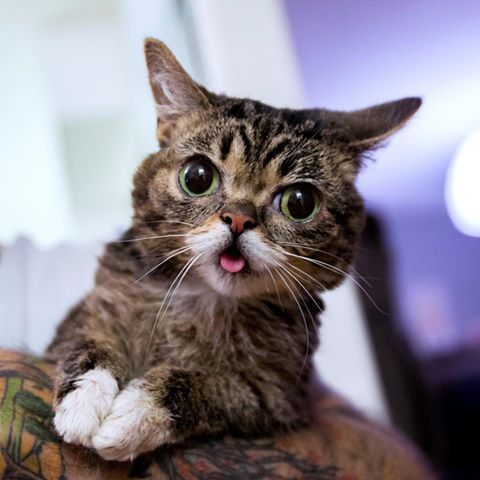

The Responsive Cat Enthusiast
About Me
The domestic cat is a small, typically furry, carnivorous mammal. They are often called house cats when kept as indoor pets or simply cats when there is no need to distinguish them from other felids and felines. Cats are awesome, I love them very much. Please follow on twitter, I am so lonely.
Services
Kitten Entertainment
Get a cat they said. it'll be fun they said. Well, they were right. Cats are awesome!
Kitten Counselling
Wish you had a secret decoder guide to cat behavior and cat language? Heres a primer to things your car wishes you understood.
Kitten Rehabilitation
Your cat's online owners manual, featuring articles about breed information, cat selection, training, grooming and care for cats and kittens.
Contact Me
Get in touch with me if you'd like to come visit - I'd love to show you around!
Email: kittencare@rwd.co.za
Mobile: 082 123 4567